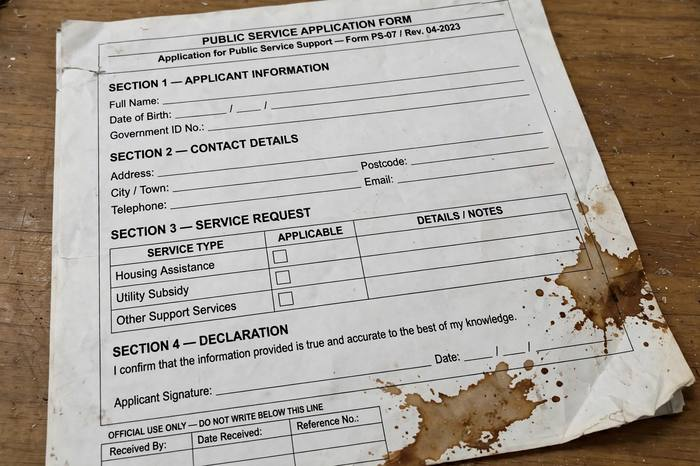

Cities, counties, school districts, universities and hospitals: we take your old public PDFs and return them tagged, in correct reading order, and validated against WCAG 2.1 AA — with a validation report for every document.
FROM $8–$15 / PAGE · $500 PROJECT MINIMUM · FREE SAMPLE AUDIT FIRST
The problem — in plain numbers
Millions of public PDFs — board agendas, benefit forms, handbooks, annual reports — were posted as flat scans or untagged exports. To a blind resident using a screen reader, they are blank, jumbled, or impossible to navigate. The DOJ's ADA Title II rule now requires state and local government web and mobile content to meet WCAG 2.1 AA. The obligation is already in force; the compliance dates are April 26, 2027 (entities serving 50,000+ people) and April 26, 2028 (smaller entities and special districts). Section 504 (HHS) follows on May 11, 2027 and May 10, 2028.
| What gets checked | Typical old PDF |
|---|---|
| Document tags & headings | FAIL |
| Reading order | FAIL |
| Tables with header rows | FAIL |
| Alt text on images & seals | FAIL |
| Form fields labeled | FAIL |
This is the exact gap a free sample audit shows you — on your own documents, before you pay anything.
What remediation includes
Real heading levels, lists and landmarks — so screen-reader users can navigate by section instead of listening to the whole file.
Columns, sidebars and footnotes re-sequenced so the document reads in the order a person would read it.
Header rows and columns tagged, so data tables announce their context cell by cell.
Meaningful descriptions for photos, charts, seals and signatures; decorative items marked as artifacts.
Labeled, keyboard-reachable form fields with tooltips — fillable by assistive technology, not just by mouse.
A per-document report against WCAG 2.1 AA checkpoints, so your team has a record of what was fixed and verified.
Sample — see the difference
Sample document for illustration only — labeled SAMPLE throughout. This is a representation of the remediation output structure, not a client document.

1Title → 2Instructions → 3Table, row by row → 4Signature block. Reading order verified page by page.
SAMPLE — STRUCTURE REPRESENTATION
Honest price comparison — verified figures
And the DIY route isn't free either: professional remediation software alone (CommonLook / Equidox class) costs $299–$349 per user, per month — before anyone does the work. Market reference: Accessible.org lists PDF remediation from $4.00/page with a $250 minimum and typical projects of $750–$4,500; published professional manual range is $5–$25+ per page (Venngage cost guide).
Pricing
Text-based PDFs, simple layout, few tables.
Multi-column, data tables, forms, charts.
Scanned-only files needing OCR + full rebuild.
A typical small-district project (300–800 pages) runs $2,400–$12,000. Optional maintenance review for newly published PDFs: from $299/month. Exact per-page rate is confirmed after your free sample audit — before any payment beyond the project start.
$500 COVERS THE FIRST BATCH — UP TO 40 STANDARD PAGES
How it works
Send a few representative PDFs. We check them and show you exactly what fails — and the exact per-page rate for your set.
You approve the scope and start with the $500 project start (first batch, up to 40 standard pages). Larger sets are quoted at $8–$15/page.
Tagging, reading order, tables, alt text and form fields — done document by document, checked as we go.
You receive the remediated files plus a per-document validation report against WCAG 2.1 AA.
FAQ
Under the DOJ's ADA Title II interim final rule (April 20, 2026): entities serving 50,000+ people — April 26, 2027. Smaller entities and special districts — April 26, 2028. Section 504 (HHS): May 11, 2027 and May 10, 2028. Your counsel confirms which bucket you are in; we remediate against WCAG 2.1 AA either way.
The first remediation batch: up to 40 standard pages. If your documents are complex or scanned-only, the batch page count is set in writing after the free sample audit, before work begins. Larger projects continue at the confirmed $8–$15/page rate.
No — and be wary of anyone who does. We deliver remediation verified against the WCAG 2.1 AA standard, with a validation report. Legal responsibility for compliance remains with your institution.
PDFs of any age or origin — native exports, Word-to-PDF, and scanned-only files (OCR included in the scanned/heavy tier).
Yes — the optional maintenance review starts at $299/month and covers newly published documents on a recurring check-and-remediate cycle.
The $500 project start covers your first batch — up to 40 standard pages — remediated and validated. Larger projects quoted at $8–$15/page after your free sample audit.
Start a Project — $500 →